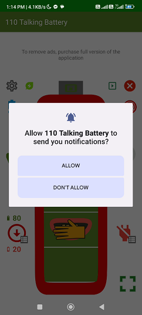
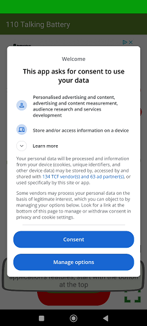

1.Dane użytkownikaAplikacja nie pobiera, nie przetwarza i nie gromadzi żadnych danych użytkownika, nie przesyła danych do chmury, na zewnętrzne serwery czy do zewnętrznych firm, nie zakłada kont użytkowników.Aplikacja korzysta z technicznych informacji dotyczących urządzenia, w szczególności stanu baterii. Pobiera, prezentuje, przetwarza te informacje jedynie na urządzeniu. |
2.Powiadomienia - praca w tleDo pracy aplikacji w tle (bez widocznego ekranu) podczas której pokazywane są powiadomienia oraz może być odtwarzana mowa lub dźwięki, aplikacja używa poniższych uprawnień systemowych Android:
Pokazywanie powiadomień można włączyć lub wyłaczyć w ustawieniach aplikacji:  |
3.Synteza głosuAplikacja używa silnika (bibliotek) do syntezy głosu, takich jakie są zainstalowane na urządzeniu.Najczęściej będą to:
|
4.Przekierowania na zewnętrzne stronyAplikacja zawiera linki do zewnętrznych zasobów takich jak: |
5.EmailAplikacja umożliwia wstępne przygotowanie zapytań przez email bezpośrednio z aplikacji. Do emaila dołącza podstawowe informacje techniczne na temat urządzenia takie jak producent, model i wymiary ekranu.Email jest wysyłany przez zainstalowanego na urządzeniu i wybranego przez użytkownika klienta poczty elektronicznej na adres: battery.110kvs@gmail.com |
6.ReklamyAplikacja płatna nie zawiera reklam.Aplikacja w wersji bezpłatej wyświetla reklamy. Używa w tym celu standardowych bibliotek firmy Google, które łączą sie przez internet z dostawcami reklam i pobierają reklamy. Używane uprawnienie: com.google.android.gms.permission.AD_ID Przed wyświetlaniem reklam pojawia się ekran z prośbą o zgodę oraz możliwością konfiguracji:  |